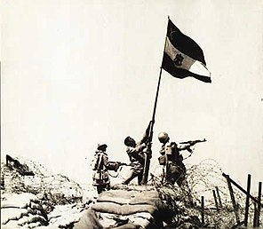
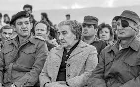

רקע כללי
מלחמת יום הכיפורים פרצה ב-6 באוקטובר 1973, כאשר צבאות מצרים וסוריה תקפו את ישראל בהפתעה ביום הקדוש ביותר בלוח השנה היהודי. המתקפה הפתאומית הייתה מתוכננת היטב ותואמה מראש, תוך שאיפה לשנות את המצב הביטחוני במזרח התיכון ולהשיב שטחים שאבדו במלחמת ששת הימים.
הקרב התנהל בעוצמה בשתי חזיתות: דרום ומזרח, כאשר לוחמי צה"ל התמודדו עם כוחות עדיפים במספר ובציוד. המלחמה זכורה כאחד האירועים הקשים והמורכבים בהיסטוריה של מדינת ישראל.

קרבות מרכזיים
חזית הדרום - סיני
בחזית הדרום, צבא מצרים פתח במבצע "באדר", תוך צליחת תעלת סואץ ושבירת קו בר-לב. הכוחות המצרים נקטו פעולות התקפיות מתוחכמות, בעוד שצה"ל מצא עצמו נאלץ לבצע נסיגה טקטית זמנית. אולם, תגובת הנגד של כוחותינו כללה מתקפות נועזות שהובילו לכיתור כוחות אויב בעומק סיני.
חזית הצפון - רמת הגולן
בצפון, צבא סוריה תקף את רמת הגולן במטרה לכבוש מחדש את השטח האסטרטגי. הקרב היה מר ודרמטי, כאשר כוחות צה"ל, למרות נחיתות מספרית, הצליחו לבלום את ההתקפה ולהדוף את הכוחות הסוריים בחזרה לתוך שטחיהם.

תוצאות והשפעות
המלחמה הובילה לנפגעים רבים ולמחיר כבד עבור כל הצדדים. החברה הישראלית עברה טלטלה עמוקה, שהובילה לחשבון נפש לאומי ולחקירת המחדלים שלפני המלחמה. בצד המדיני, המלחמה הביאה בסופו של דבר לתהליך השלום עם מצרים, שהסתיים בהסכם שלום היסטורי בשנת 1979.
המורשת והזיכרון
זיכרון מלחמת יום הכיפורים נשמר בלב החברה הישראלית. אתרי הנצחה רבים הוקמו ברחבי הארץ, וטקסי זיכרון נערכים מדי שנה כדי לכבד את אלו שנפלו. המלחמה משמשת גם נושא מרכזי ליצירות ספרות, שירה וקולנוע, המשמרים את תחושת ההקרבה ואת לקחי הימים ההם.

חידון מלחמת יום הכיפורים
בדקו את הידע שלכם על אחד האירועים המשמעותיים ביותר בתולדות ישראל: